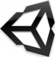

Unity3D Applications
Following is a portfolio of applications I have been the sole (Design & Coding) developer unless marked otherwise.
-
Professional work
- portfolio
- (July 2022 - Jan 2024) Strivr - VR training.
- (May 2017 - July 2021) Facebook Reality Labs - Internal VR tools.
- (May 2015 - Dec 2016) Jetstream Software
- Tradeshows & Official Space Needle AR app (Vuforia)
- (Mar 2016 - June 2016) Microsoft - Envisioning center.
- (Feb 2015 - April 2015) Rocket Alien - VR prototyping.
-
(April 2013 - Aug 2014) LiteSprite
- 2D mobile game to help people diagnosised with general anxiety.
-
Released titles
-
Game Jams
- VR/AR centric
- Seattle VR Hackathon 6 Sept 2017 - Quester, team of 7 build 5 player VR climbing experience. 1 in VR, 4 on splitscreen.
- Hololens Hackathon May 2016 - HoloRover, using a martian rover to learn programming.
-
Game Dev Fort - Month long judged game jam
-
Super Flora Fighter Aug 2015 - Theme: Growth. Did 90% of the coding work. 1 other teammate, did the design and creative allocation.
-
Ludum Dare - Weekend long game jams, usually solo.
-
House of Games (Hog) Jams - team game jams
- Hog Jam #2 Dec 2013 - A chicken themed game jam. Got to introduce two developers to Unity3D and make a working game. source code.
- Hog Jam #3 Jan 2014 - Came late so wore a different hat. UI Artist on "Grilled Cheese Showdown".
-
Global Game Jam - team game jams
-
The Lost Necklace
Jan 2021
- Pixel art RPG to find a lost necklace before the school play.
-
Comrade Cosmonaut
Jan 2020
- Tower defense repair in space to protecting a secret soviet base.
-
Housing Reroll
Jan 2019
- 12 different game mechanics are combined with rerolls until the player finds the right 2d platformer home for them.
-
Robot Love Song
Jan 2018
- Serenade your electronic rivals with a transmission.
-
Sasves (Simon Waves)
Jan 2017
- accelerometer and gyroscope help player wave the same way simon waves. (play on Android)
-
Limbz
Jan 2016
- Detach the limbs from your neighbors and use them to bring life to your zombie slave.
-
Good Game, Sheep!
Jan 2015
- A competitive collect-a-thon with hidden objectives, treachery, and woolly ruminants.
-
Broken Home Jan 2014
-
Unity editor enhancements
-
Library Sf - Library of miscellaneous small generic utilities, scripts & PropertyDrawers for Unity projects.
-
SoArchitecture - A fork of Ryan Hippie's Unite 2017 talk. The defining feature added in this fork is events that support payloads.
- Mecanim State Machine - Tool that makes it easy visually to track game state inside unity.
- Interact to Toggle - At RocketAlien, primary developer for an editor plugin that was built to be published to the Unity Asset store.
-
Prototyping
-
Velizo
July 2024
- 2D platformer used as testing ground for Game CI and collab with kids.
-
LunarLander
March 2013 - Dec 2014
Unity 3D implementation of the game Lunar Lander.
- Procedurally generated levels via generated 3D meshes
- Worked with 3D artist
- Iterated from NGUI to Unity4.6 UI
- Controls for both touch and keyboard
- Playable Android version
- Source code
-
Touch Hero
Jan 2015
- Implemented a 2 player guitar hero clone for touch devices.
-
Rock Paper Scissors
March 2013
- Worked with 2 other developers to develop Rock Paper Scissors game played against an AI.